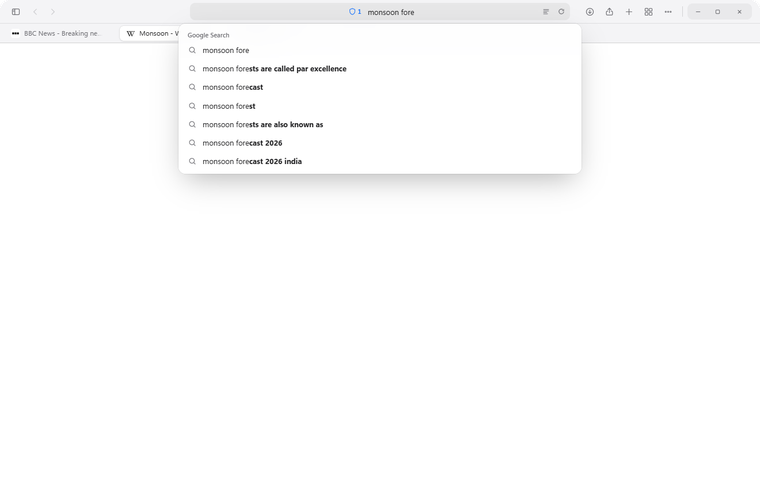
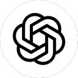
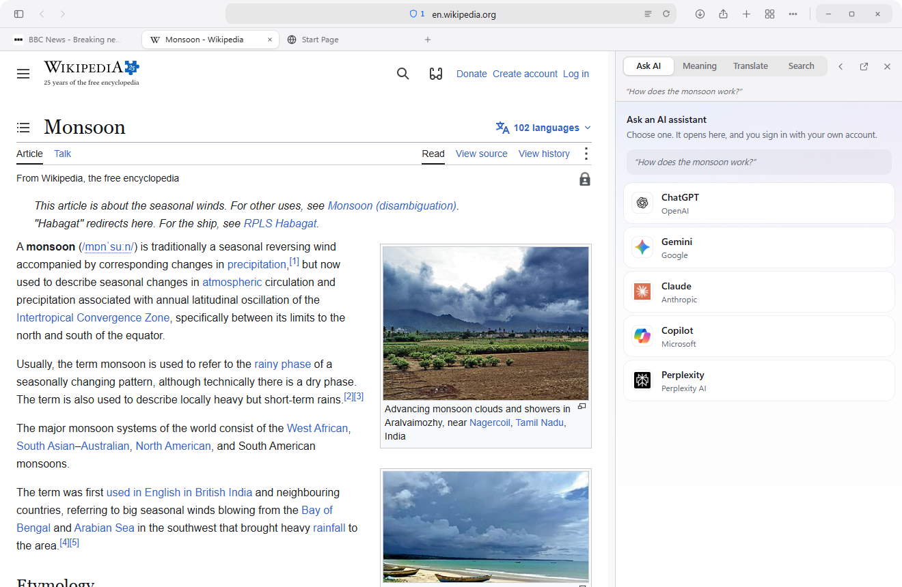
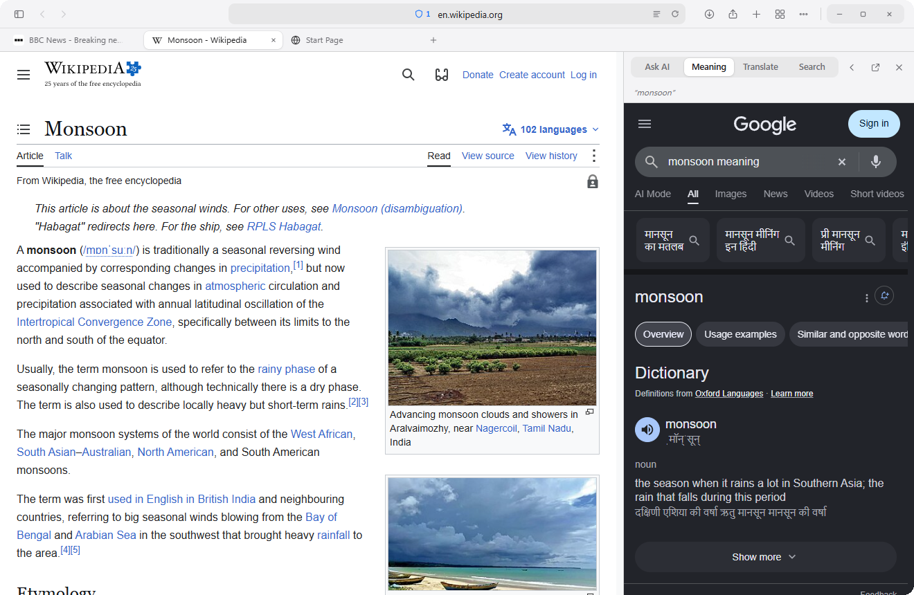
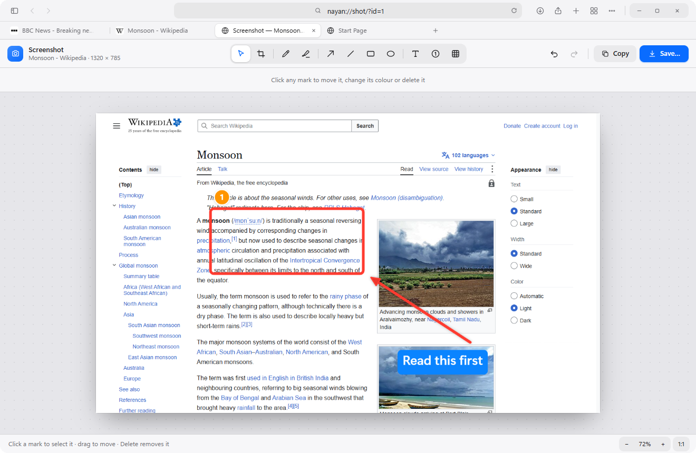
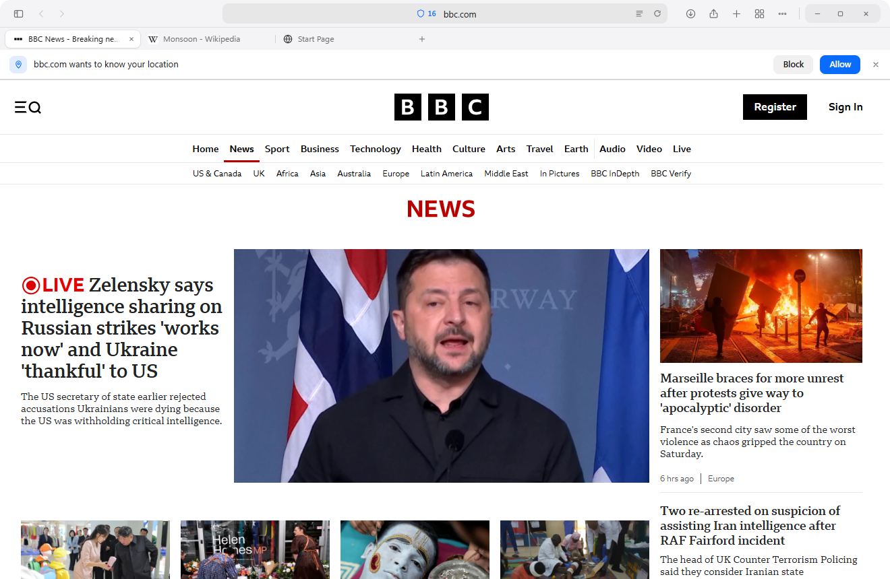
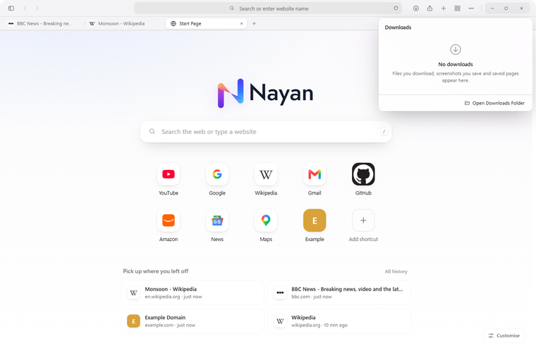
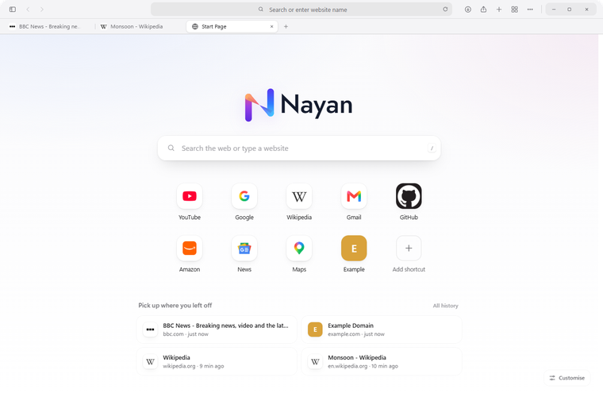

Suggestions as you type
Live suggestions from your search engine, in Hindi too, with your own history beside them.
Built on Chromium, so every site works. On top of it sits a calm interface, an ad blocker that is on from the first minute, and an AI assistant one keystroke away. Made by NayanX.

ChatGPT Gemini Claude Copilot PerplexityAnswers, screenshots and downloads happen next to what you are reading, so you never lose your place.
Select any text and press Ask AI. Your assistant opens in a panel next to the article with the question already filled in. Choose ChatGPT, Gemini, Claude, Copilot or Perplexity and sign in with your own account.

WhatsApp, Instagram, Telegram, Messenger and nine more live in a rail down the side of the window. They stay signed in and keep running, so the count on the toolbar is always right. Open the Messages tab and three or four of them sit side by side.
Highlight a word for its meaning, a paragraph for a Hindi or English translation. The answer slides in beside the page and closes when you are done. The page never moves.

Take the visible screen, a selected area, or the whole page scrolled to the end. Nothing is saved behind your back: the picture opens in an editor where you can crop, draw, add text and blur anything private.

Most browsers hand your camera, microphone and location to a site the moment it asks. Nayan asks you first, every time, and remembers your answer for that site alone.
Download Nayan
The parts of a browser nobody praises until they are done right.

Live suggestions from your search engine, in Hindi too, with your own history beside them.

Speed, time left and a magnifier to open the folder. Screenshots and saved pages land here too.

Unused tabs give their memory back, and pages are fetched a moment before you click.
NayanX makes software people keep open all day: quick, quiet and private by default. Nayan is our browser — the first thing we are giving everyone, free, with no account and nothing reported back to us.
One promise runs through everything we build: your computer is yours. What you read, type and save stays on it.
Download NayanTwo builds, one browser. They install side by side and keep separate settings, history and logins.
The everyday browser. Free, no account, nothing reported back.
Everything in Nayan, and the repetitive part of the day taken off your people.
Not sure? Take Nayan. You can install Nayan for Work next to it later — they are separate apps on the machine and neither touches the other’s settings or logins.
Already using Chrome or Edge? Your bookmarks and history can come across on the first run.